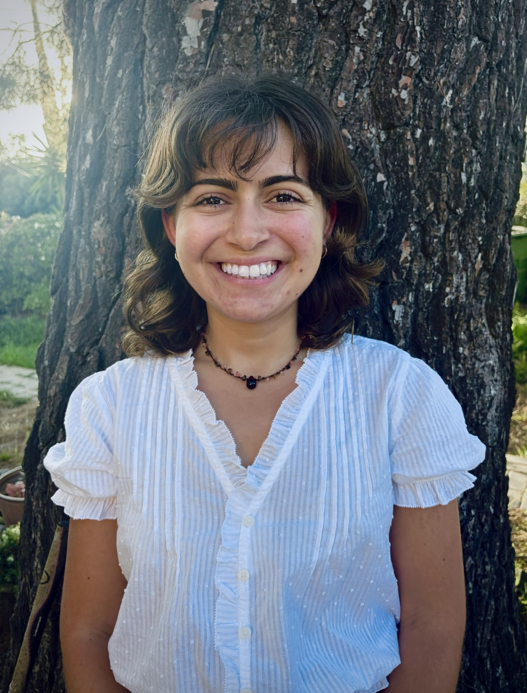

Photography
Through the lensA place for photographs, observations, and the moments worth keeping.
Collection notes +
A selection of photographs will be added here soon.
I solve complex customer problems, sell organic juice at LA markets, and build tools that make work better. Now, I’m bringing that curiosity and initiative into marketing.
EXPLORE MY WORLD
A place for photographs, observations, and the moments worth keeping.
A selection of photographs will be added here soon.
A place for stories, reflections, and ideas finding their way onto the page.
Selected writing will be added here soon.
Every weekend, I sell organic juice at LA markets—bringing my business directly to the people it serves.
VISIT THE JUICE BUSINESSI’m Mery Ter-Avetisyan—a customer problem solver, entrepreneur, and aspiring marketer. I’m drawn to understanding people, making complex ideas clear, and turning ideas into something useful.
Born in Los Angeles and raised between Armenia and the US, I became the first in my family to graduate from college. At UC Santa Cruz, I studied business economics and cognitive science. I went on to build WorkShip, a career platform for students in Thailand, and secured $15,000 in seed funding.
At Rippling, I resolved more than 800 customer support cases in nine months and built my own AI tools to work faster. On weekends, I run my organic juice business at LA markets. Across both, I’m learning what people need, how to earn their trust, and how to turn feedback into action. I’m now looking for my next role in marketing.
Exploring my next chapter in marketing, with more photographs and writing to come.